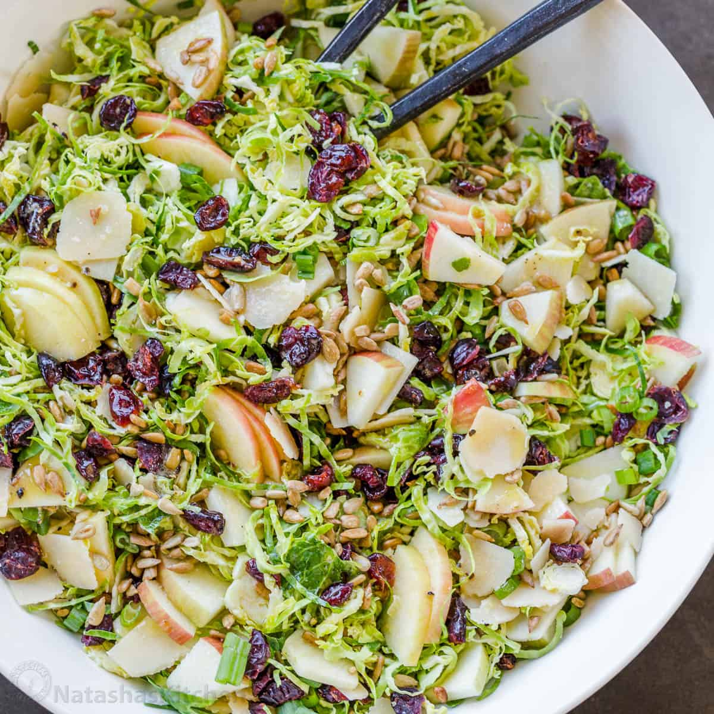

This salad is a perfect mix of savory and sweet, with the tangy lemon dressing balancing out the sweetness of the dried cranberries and the nuttiness of the walnuts. The shaved Brussels sprouts provide a crunchy texture that is both satisfying and refreshing. This salad is a great side dish or light meal that's perfect for any occasion!